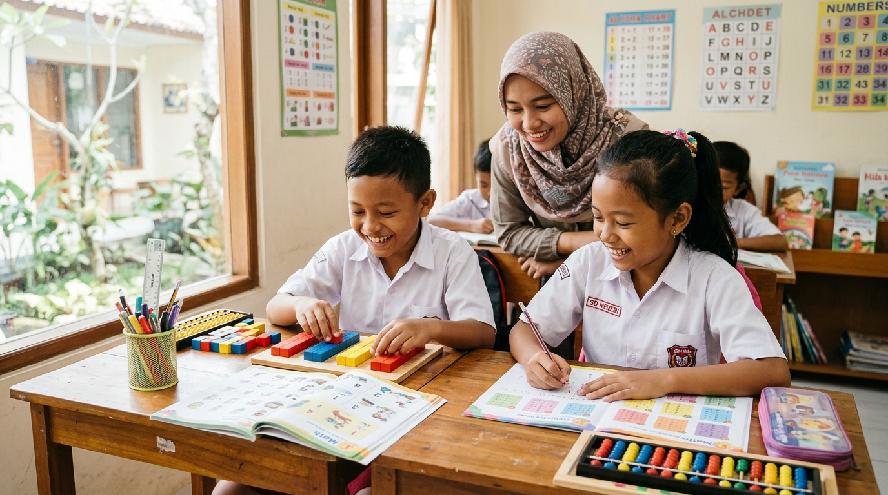

SD Kelas 4–6
Tersedia 4 Kursi
Reguler SD Juara
Fondasi Matematika, IPA, dan Bahasa Indonesia yang kuat dengan pendekatan visual aplikatif dan menyenangkan.
- check_circle 2 sesi per minggu (90 menit/sesi)
- check_circle Modul ringkas bergambar & latihan berkala
- check_circle Bantuan PR harian & persiapan ujian semester
- check_circle Laporan perkembangan bulanan ke orang tua
Mulai dari
Rp750.000/bln
Pilih Program